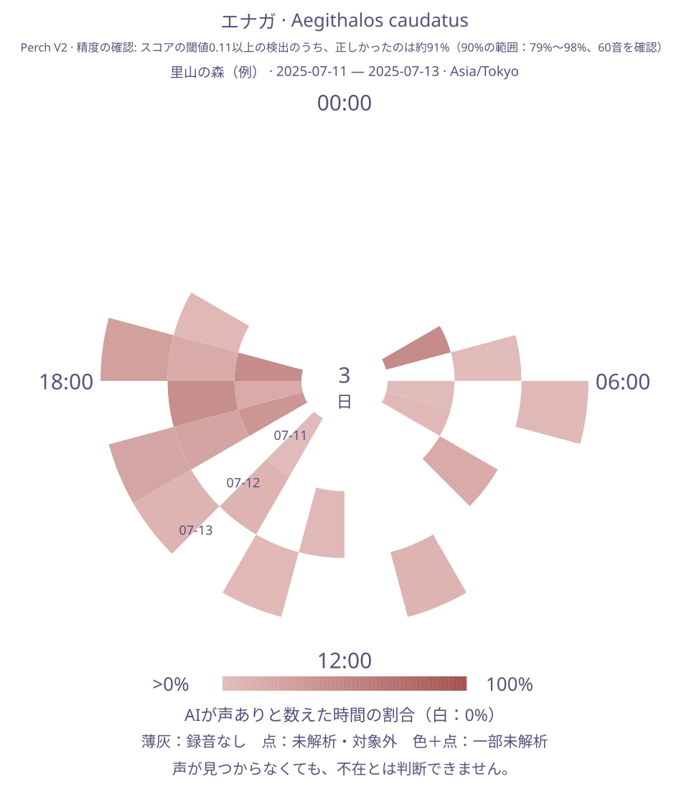
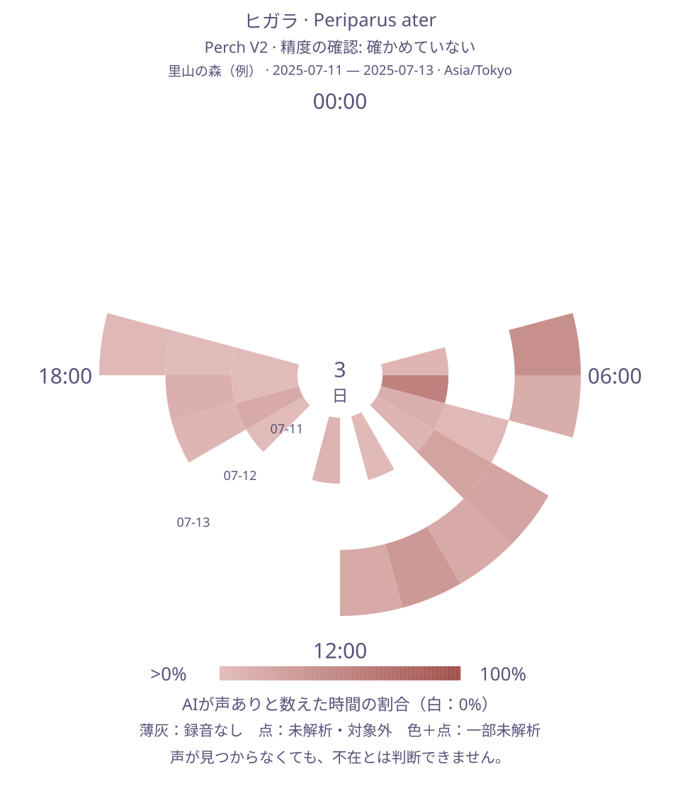

録音からみる生き物の記録
里山の森（例）・2025年7月11日〜13日・録音 12 時間（144 ファイル）
2 種人が聞いて、声を確かめた
1 種AIの精度を確かめて、数えた
8 種このレポートに載せた（あなたが選んだ種）
| 種 | 人が聞いて確かめた | AIの検出 |
|---|
| エナガAegithalos caudatus |
声あり 15 音 |
精度を確かめた 383 区間正しかったのは約 91% |
| トラツグミZoothera aurea |
声あり 3 音 |
使っていないAI がこの種の声を見分けられていなかった |
| ヒガラPeriparus ater |
まだ聞いていない |
参考 361 区間どれくらい正しいかは、まだ分からない |
| ほか 5 種キクイタダキ、ヤマガラ、ヨーロッパコマドリ、キバシリ、イスカ |
まだ聞いていない |
参考 19〜169 区間 |
声が見つからなかったことや、載っていない種は、その種がいなかったことを意味しません。
種ごとの結果
AI の検出の読み方
AI は録音を 5 秒ずつに区切り（この 1 つを「区間」と呼びます）、それぞれに 0〜1 の「スコア」をつけます。スコアが決めた値（閾値）以上の区間を「声あり」と数えます。数は区間の数で、鳴いた回数や個体数ではありません。
円の図は、内側から外側へ日付が進み、円の周りが時刻（0〜24 時）です。
濃い赤ほど、その時間に AI が「声あり」と数えた割合が高い
白：検出なし
薄い灰色：録音なし
録音がない時間は、声がなかった時間として読みません。
エナガ Aegithalos caudatus

人が聞いて確かめた：声あり 15 音
人が聞いて、エナガの声だと答えた音です。AI の検出ではありません。
- 7月11日 4:30:10精度の確認
- 7月11日 4:30:30精度の確認
- 7月11日 5:00:15候補の一覧
- 7月11日 16:00:00精度の確認
- 7月12日 17:02:05精度の確認
残りの 10 音を表示
（ここに残りの音が同じ形で並びます）
AIの検出：精度を確かめた
- AI
- Perch V2
- 数え方
- スコア 0.11 以上を「声あり」（人が聞いて確かめた結果から決めた値）
- 数えた区間
- 383 区間（調べた 8,640 区間の 4.4%）。検出のあった日：3 日
- 精度
- 「声あり」と数えた区間のうち、正しかったのは約 91%（おそらく 79〜98% の間。60 音を人が聞いて確かめた結果から見積もり）
精度の詳しい記録・まとめに戻る
トラツグミ Zoothera aurea
AI の検出の図は載せていません（右の「AI の検出」を見てください）。
人が聞いて確かめた：声あり 3 音
- 7月12日 2:14:05AIを育てる画面
- 7月12日 2:31:40AIを育てる画面
- 7月13日 1:58:20候補の一覧
AIの検出：使っていない
AI がスコアを高くつけた音を人が聞いて確かめたところ、トラツグミの声は入っていませんでした。この AI はトラツグミの声を見分けられていないので、検出の数も図も、このレポートには使っていません。
- AI
- この種用の AI（11月16日に作成）
精度の詳しい記録・まとめに戻る
ヒガラ Periparus ater

人が聞いて確かめた：まだ聞いていない
AIの検出：参考
- AI
- Perch V2
- 数え方
- スコア 0.10 以上を「声あり」（はじめから決まっている値。人が確かめて決めた値ではない）
- 数えた区間
- 361 区間（調べた 8,640 区間の 4.2%）。検出のあった日：3 日
- 精度
- まだ確かめていないので、どれくらい正しいかは分かりません
AI がスコアを高くつけた音（5 音）
（AI の例です。人は聞いていません）
まとめに戻る
ほか 5 種（まだ聞いていない・参考）
（ヒガラと同じ形で、1 種ずつ続きます）
調べた録音
- 地点
- 里山の森（例） 35.360823, 138.727500（Asia/Tokyo）
- 期間
- 2025年7月11日〜13日（録音のある日 3 日）
- 録音
- 144 ファイル、12.00 時間
- AI が調べた範囲
- Perch V2：12.00 時間（すべて）
録音があった時間（AI の検出ではありません）
録音していたのは、期間のうち 17%（1 日あたり平均 4 時間）です。線の1本が、1つの録音の時間です（地点の現地時刻）。線にカーソルを重ねると、その録音の時刻と長さが出ます。
この録音だけでは分からないこと
声が見つからなかったことは、いなかったことを意味しません。個体数、繁殖、声を出した位置、区域全体の保全の効果は、この資料だけでは判断できません。
詳しい記録
報告書に数字の根拠を書くときや、ほかの人が確かめるときに使います。
精度の確認の詳しい結果（AI・種ごと）
エナガ・Perch V2
- 閾値
- 0.11（人が聞いて確かめた結果から決めた値）
- 精度
- 約 91%（おそらく 79〜98% の間）
- 見つけた割合
- 声があった区間のうち、AI が「声あり」と数えたのは約 91%（おそらく 80〜98% の間）
- 声が入っていたと見込まれる区間
- 約 378 区間（おそらく 329〜727 の間）
- 聞いて答えた音
- 60 音（聞こえる 14・聞こえない 46・判断できない 0）
音の選び方と答えの一つひとつは、ファイル（validation/）に残しています。
答えた 60 音を聞く
（「聞こえない」と答えた音も含めて並びます）
AI ごとの集計の一覧（全種）
（今の「AIごとの詳しい集計」の表）
集計と精度の確認の方法
スコアの高い音から低い音まで、まんべんなく選んだ 60 音を人が聞き、その答えから閾値と精度を見積もりました。（計算の細かい手順は、ファイルの README に書きます）
聞き分けクイズの記録
（記録がある種だけ。記録がなければ、この項目ごと出しません）
ファイルの一覧と保存の情報
（CSV・音声・保存日時・ID）